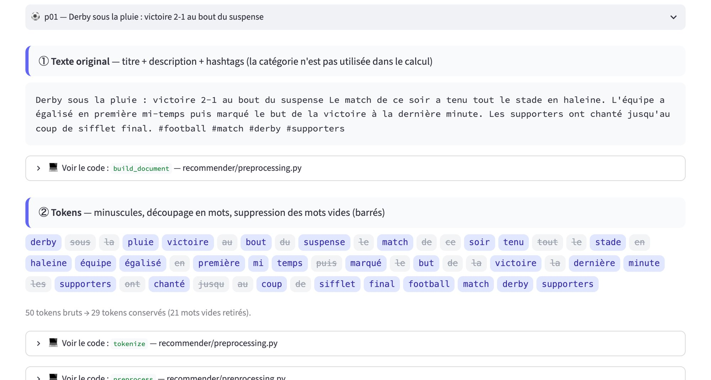
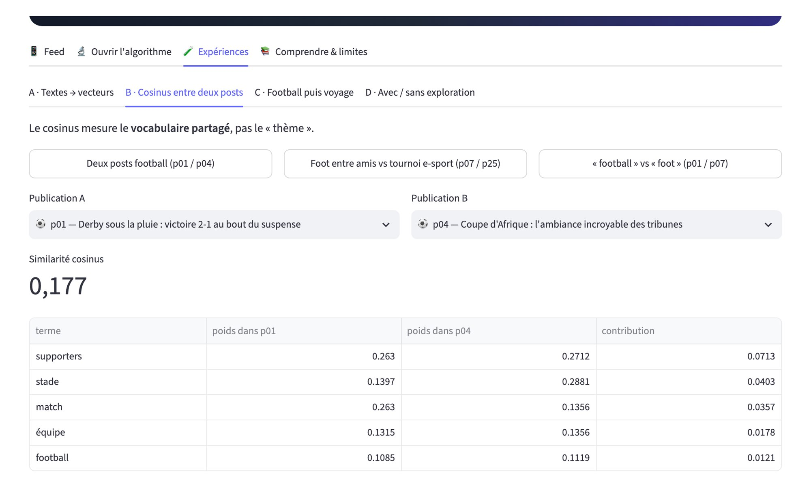
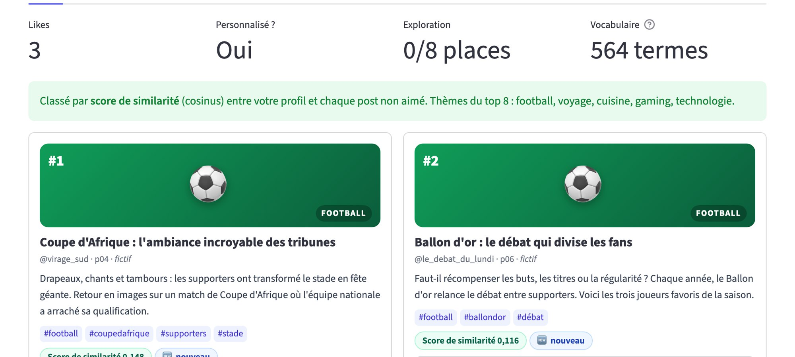

Introduction
Sur un réseau social, il y a toujours beaucoup plus de publications que de place à l'écran. Le feed doit donc choisir quelles publications montrer et dans quel ordre : c'est le rôle d'un système de recommandation. Pour comparer des publications entre elles, ou une publication avec les goûts d'un utilisateur, il faut d'abord transformer les textes en nombres : c'est le rôle du traitement automatique du langage naturel (NLP).
Ce travail pratique s'appuie sur notre projet « Inside the Feed » : un mini réseau social simulé de 40 publications fictives, réparties en six thèmes, et un moteur de recommandation basé sur le contenu. Les textes sont vectorisés par TF-IDF, l'utilisateur est représenté par un profil construit à partir de ses likes, et les publications sont classées par similarité cosinus.
Le TP suit la chaîne du moteur, étape par étape. Pour chaque étape, il présente la notion, le code correspondant dans le projet, une manipulation à réaliser dans l'application ou en Python, et des questions. Des éléments de correction sont donnés en annexe.
Comment un système peut-il transformer des textes et des likes en un feed personnalisé, et dans quelle mesure ce calcul peut-il être rendu explicable ?
Objectifs et environnement
Objectifs du TP
À la fin de ce TP, l'étudiant doit être capable de :
- transformer un texte en tokens, puis en vecteur TF-IDF, et refaire ce calcul à la main ;
- calculer et interpréter une similarité cosinus entre deux textes ;
- expliquer comment un profil utilisateur est construit à partir de likes ;
- expliquer pourquoi une publication est recommandée, terme par terme ;
- distinguer le modèle, qui calcule des scores, de la règle d'affichage, qui choisit quoi montrer ;
- identifier les limites d'une recommandation basée sur le contenu.
Les trois familles de recommandation
On distingue généralement trois familles de systèmes. Ce TP porte sur la première, qui fonctionne avec un seul utilisateur et dont chaque score peut être expliqué.
| Famille | Principe | Données utilisées |
|---|---|---|
| Basée sur le contenu | « Des posts qui ressemblent à ceux que vous aimez. » | Texte des posts ; un seul utilisateur suffit |
| Filtrage collaboratif | « Des posts aimés par des gens qui vous ressemblent. » | Likes de nombreux utilisateurs ; ignore le texte |
| Hybride | Combinaison des deux, avec d'autres signaux | Popularité, contexte, temps de visionnage… |
Environnement et installation
| Élément | Description |
|---|---|
| Langage | Python 3.10 ou plus récent (testé avec 3.13) |
| Bibliothèques | scikit-learn, NumPy, pandas, Streamlit, pytest |
| Données | data/posts.json : 40 publications fictives, 6 thèmes |
| Réseau | Aucun après l'installation |
cd ~/Desktop/NLP_RECOMM python3 -m venv .venv source .venv/bin/activate python -m pip install -r requirements.txt pytest python -m pytest -q # doit afficher : 44 passed streamlit run app.py # puis ouvrir http://localhost:8501
Organisation du projet
| Fichier | Rôle | Étapes |
|---|---|---|
recommender/preprocessing.py | Texte → tokens | 1, 2 |
recommender/model.py | TF-IDF, cosinus, profil, explication des scores | 3 à 6 |
recommender/feed.py | Classement, feed initial, exploration | 7, 8 |
recommender/scenarios.py | Scénarios de démonstration, expériences A à D | — |
app.py | Interface Streamlit (4 onglets) | toutes |
tests/ | 44 tests automatiques | toutes |
Le dossier recommender/ n'importe jamais Streamlit : le moteur peut être utilisé et testé sans interface.
Les manipulations en Python se font depuis le dossier du projet, avec l'environnement virtuel activé, en commençant par :
from recommender import * m = FeedModel(load_posts()) # le corpus vectorisé (40 posts)
La chaîne de traitement
Le moteur transforme un texte en feed en six étapes. Les trois premières relèvent du NLP, les deux suivantes de la recommandation, et la dernière est une règle d'affichage.
Étapes 1 à 3 : NLP · Étapes 4 et 5 : recommandation · Étape 6 : règle d'affichage
Partie NLP : du texte au vecteur
Le texte analysé
Chaque publication possède un titre, une description, des hashtags et une catégorie (football, voyage, cuisine, gaming, technologie, fitness). Le moteur analyse uniquement le texte : le titre, la description et les hashtags, réunis en une seule chaîne.
La catégorie est volontairement exclue du calcul : le modèle ne doit apprendre que des mots. Elle sert seulement à l'affichage, au feed initial et à la règle d'exploration, qui ne relèvent pas du NLP.
def build_document(post):
"""Concatène titre + description + hashtags. La catégorie n'est PAS incluse."""
return " ".join([post["titre"], post["description"], " ".join(post["hashtags"])])- Affichez
build_document(m.by_id["p01"]). Quels champs du post s'y retrouvent ? Lequel est absent ? - Pourquoi est-il important que la catégorie ne soit pas utilisée par le modèle ?
Le prétraitement : texte → tokens
Un ordinateur ne compare pas des phrases : il compare des unités. Le prétraitement découpe le texte en mots utiles, appelés tokens, en quatre opérations :
- Minuscules : « Derby » et « derby » deviennent le même mot.
- Découpage : une expression régulière garde les suites de lettres, accents compris. La ponctuation,
les chiffres, le
#et les apostrophes servent de séparateurs :#footballdonnefootball,l'équipedonneéquipe. - Longueur minimale : seuls les tokens de deux lettres ou plus sont conservés.
- Mots vides : les mots très fréquents et peu informatifs (« le », « de », « au »…), listés dans
data/stopwords_fr.txt, sont retirés. Présents partout, ils ne distinguent aucune publication.
Le projet ne fait pas de lemmatisation : joueur et joueurs restent deux mots
différents. C'est un choix de simplicité, qui constitue aussi une limite (chapitre 4).
TOKEN_PATTERN = re.compile(r"[a-zàâäçéèêëîïôöùûüÿœæ]+")
def tokenize(text):
# minuscules + découpage, tokens de 2 lettres ou plus
return [t for t in TOKEN_PATTERN.findall(text.lower()) if len(t) >= 2]
def remove_stopwords(tokens):
stopwords = load_stopwords()
return [t for t in tokens if t not in stopwords]
def preprocess(text):
# chaîne complète, utilisée aussi par TfidfVectorizer
return remove_stopwords(tokenize(text))doc = build_document(m.by_id["p01"])
print(len(tokenize(doc))) # 50 tokens bruts
print(len(preprocess(doc))) # 29 tokens conservés
print(preprocess("L'équipe a marqué ! #Football"))
- Que devient la phrase
"L'équipe a marqué ! #Football"? Expliquez chaque transformation. - Pourquoi retire-t-on les mots vides ? Que se passerait-il si on les gardait ?
- Donnez un exemple du corpus où l'absence de lemmatisation sépare deux mots de même sens.
TF-IDF : tokens → vecteur
On veut représenter chaque publication par une liste de nombres, un vecteur, avec une case par mot du vocabulaire. Chaque mot y reçoit un poids qui indique à quel point il caractérise la publication :
- tf (term frequency) : le nombre de fois où le mot apparaît dans la publication. Il traduit l'idée « ce mot compte ici ».
- idf (inverse document frequency) : plus un mot est présent dans beaucoup de publications, plus son idf est faible. Il traduit l'idée « ce mot est rare ailleurs ».
- Normalisation L2 : le vecteur est divisé par sa longueur, de sorte que chaque publication ait une longueur égale à 1, qu'elle soit courte ou longue.
Avec n le nombre de publications (40) et df(t) le nombre de publications contenant le mot t :
Un mot pèse donc lourd s'il est fréquent dans la publication et rare dans le corpus. Dans p01,
derby (idf 4,02, présent dans une seule publication) pèse plus que football (idf 2,41, présent
dans beaucoup de publications). Sur nos 40 publications, le vocabulaire compte 564 termes : chaque
publication est un vecteur de 564 nombres, dont 3,3 % seulement sont non nuls.
def make_vectorizer():
return TfidfVectorizer(
analyzer=preprocess, # notre prétraitement remplace celui de scikit-learn
use_idf=True, smooth_idf=True, sublinear_tf=False, norm="l2")
# dans FeedModel.__post_init__ (ligne 36) : une ligne par post, une colonne par terme
self.matrix = self.vectorizer.fit_transform(self.documents) # matrice 40 x 564print(m.matrix.shape, m.matrix.nnz) # (40, 564) 735
print(m.idf("football"), m.idf("derby")) # 2.411 4.02
print(m.post_weights("p01")[:5]) # les 5 mots les plus lourds de p01
Exemple de calcul à la main
Pour vérifier la formule, on vectorise seuls trois textes courts (n = 3), avec exactement le même code que l'application (onglet « Expériences », partie A) :
- T1 « Le match de football au stade » →
match, football, stade; - T2 « Voyage au stade de Barcelone » →
voyage, stade, barcelone; - T3 « Recette du tajine marocain » →
recette, tajine, marocain.
| # | Calcul | Résultat |
|---|---|---|
| 1 | idf de stade, présent dans 2 textes : ln(4/3) + 1 | 1,2877 |
| 2 | idf des autres mots, présents dans 1 seul texte : ln(4/2) + 1 | 1,6931 |
| 3 | T1 brut = (1,6931 ; 1,6931 ; 1,2877), norme = √(1,6931² + 1,6931² + 1,2877²) | 2,7187 |
| 4 | T1 normalisé : chaque poids divisé par 2,7187 | football 0,6228 · match 0,6228 · stade 0,4736 |
Le mot stade, partagé par deux textes, pèse moins que match, présent dans un seul : c'est
exactement l'effet attendu de l'idf.
- Pourquoi
stadea-t-il un idf plus faible quematch? - Vérifiez à la main le poids de
matchdans T1. - Pourquoi la matrice 40 × 564 contient-elle presque uniquement des zéros ?
- Dans l'onglet « Expériences » (A), remplacez T3 par « Tajine à Barcelone après le match ». Prédisez puis observez l'évolution des idf.
La similarité cosinus
Chaque texte est maintenant une flèche dans un espace à 564 dimensions. Deux textes qui partagent des mots importants pointent dans la même direction. La similarité cosinus mesure l'angle entre deux flèches : elle vaut 1 pour une même direction et 0 lorsque les textes n'ont aucun mot en commun.
Comme nos vecteurs ont une longueur 1, le cosinus se réduit à une somme de produits terme à terme : seuls les mots présents dans les deux textes comptent. C'est ce qui rend chaque recommandation explicable. Contrairement à la distance euclidienne, le cosinus ne dépend pas de la longueur des textes.
Dans l'exemple précédent, T1 et T2 n'ont que stade en commun : cos(T1, T2) = 0,4736 × 0,4736 =
0,2243. T1 et T3 n'ont aucun mot commun : cos(T1, T3) = 0.
for a, b in [("p01", "p04"), ("p07", "p25"), ("p01", "p07")]:
print(a, b, round(m.cosine_between(a, b), 3))
print(m.term_contributions(m.post_vector("p07"), "p25")) # les mots communs
- Relevez le cosinus et les mots communs de p01 / p04 (deux posts football).
- Même chose pour p07 / p25 (foot entre amis / tournoi e-sport). Pourquoi est-ce surprenant ?
- p01 et p07 parlent tous deux de football. Pourquoi leur cosinus est-il nul ?
- Proposez deux modifications du prétraitement qui changeraient le résultat de la question 12.
Partie recommandation : du vecteur au feed
Le profil utilisateur
Pour comparer un utilisateur à des publications, il faut que l'utilisateur soit, lui aussi, un vecteur dans le même espace. On prend les vecteurs des publications qu'il a aimées et on en fait la moyenne : c'est le centre de ses goûts, une sorte de « publication moyenne ». Le résultat est ensuite renormalisé (longueur 1) pour pouvoir utiliser le cosinus.
Les mots présents dans plusieurs likes se renforcent, les mots isolés s'affaiblissent. Sans aucun like, il n'y a pas
de profil : la fonction renvoie None. Limite : tous les likes pèsent pareil, sans tenir compte de leur
ancienneté ni de leur intensité.
def build_profile(self, liked_ids):
if not liked_ids:
return None # cold start
rows = [self.index[pid] for pid in liked_ids]
mean = np.asarray(self.matrix[rows].mean(axis=0)).ravel()
norm = np.linalg.norm(mean)
return mean / norm if norm > 0 else Noneprof = m.build_profile(["p01", "p02", "p03"]) # trois posts football print(m.profile_weights(prof, 6)) prof4 = m.build_profile(["p01", "p02", "p03", "p10"]) # + un road trip au Maroc print(m.profile_weights(prof4, 3))
- Quels sont les trois termes dominants du profil football ? Pourquoi ceux-là ?
- Après l'ajout de p10, quel terme passe en tête, et pourquoi un seul like a-t-il autant de poids ?
- Pourquoi faut-il renormaliser la moyenne ?
Le score et son explication
Le score d'une publication est le cosinus entre le profil et le vecteur de la publication. Comme le cosinus est une somme sur les mots communs, chaque mot apporte une contribution égale au produit de son poids dans le profil et de son poids dans la publication. La somme des contributions est exactement le score : on peut donc dire pourquoi une publication est recommandée.
Ce score est une similarité comprise entre 0 et 1. Ce n'est pas une probabilité d'aimer : seul l'ordre des scores compte.
def similarity_scores(self, profile):
return cosine_similarity(profile.reshape(1, -1), self.matrix).ravel()
def term_contributions(self, profile, post_id):
post = self.post_vector(post_id)
products = profile * post # produit terme à terme = le « pourquoi »
shared = np.flatnonzero(products) # seuls les mots communs
... # une ligne par mot, triée par contributionscores = m.similarity_scores(prof)
for c in m.term_contributions(prof, "p04"):
print(c["terme"], round(c["contribution"], 4))
print(sum(c["contribution"] for c in m.term_contributions(prof, "p04")), scores[m.index["p04"]])
print(m.term_contributions(prof, "p18")) # le post de cuisine
- Quels mots expliquent le score de p04 ? Vérifiez que la somme des contributions est égale au score.
- Une publication de cuisine (p18) apparaît dans le feed football. À cause de quel mot ? Comment appelle-t-on ce phénomène ?
- Pourquoi l'application affiche-t-elle « score de similarité » et non « probabilité d'aimer » ?
Le classement et le démarrage à froid
Avec des likes, on prend toutes les publications non aimées, on les trie par score décroissant (à égalité, par identifiant) et on affiche les huit premières. Une publication déjà aimée n'est jamais reproposée. Comme le profil est une moyenne, un seul like peut tout déplacer : avec quatre likes, chacun pèse 25 %.
Sans like (démarrage à froid, cold start), il n'y a pas de profil, donc aucun score. Le feed initial affiche une publication par thème, à tour de rôle, dans l'ordre fixe football, voyage, cuisine, gaming, technologie, fitness. Il est déterministe et explicitement marqué « non personnalisé ».
def rank_by_similarity(model, liked_ids):
profile = model.build_profile(liked_ids)
if profile is None:
return []
scores = model.similarity_scores(profile)
liked = set(liked_ids)
ranking = [(pid, float(scores[i])) for i, pid in enumerate(model.ids) if pid not in liked]
return sorted(ranking, key=lambda x: (-x[1], x[0]))show = lambda r: [(i.post_id, None if i.score is None else round(i.score, 3)) for i in r.items] print(show(build_feed(m, []))) # cold start print(show(build_feed(m, ["p01", "p02", "p03"]))) # football print(show(build_feed(m, ["p01", "p02", "p03", "p10"]))) # + voyage

- Notez les huit publications du feed football et leurs scores. Sont-elles toutes des posts football ? Pourquoi ?
- Après l'ajout de p10, quelles publications entrent, sortent, montent ? Pourquoi p09 (Barcelone) progresse-t-il plus que les autres ?
- Dans
feed.py, quelle ligne garantit qu'une publication aimée n'est jamais proposée ?
L'exploration
Un feed qui ne montre que ce qui ressemble au passé se resserre : c'est la surspécialisation. L'exploration réserve quelques places à des thèmes absents du classement, pour ajouter de la diversité. Ce n'est pas du NLP : c'est une règle d'affichage, séparée du modèle et déterministe, qui choisit quelles publications montrer sans jamais modifier les scores.
- On réserve k = arrondi(8 × proportion) places (25 % donne 2 places, 50 % en donne 4).
- On repère les thèmes absents des huit premières publications du classement.
- On parcourt ces thèmes dans l'ordre fixe et on prend, à tour de rôle, la meilleure publication non aimée de chacun.
- Les autres places reçoivent les meilleurs scores ; les publications d'exploration sont insérées tous les 8 / k rangs.
def build_feed(model, liked_ids, exploration=0.0, size=FEED_SIZE):
if not liked_ids: # cold start : feed équilibré
...
ranking = rank_by_similarity(model, liked_ids) # NLP : scores triés
top = ranking[:size]
themes_absents = [c for c in CATEGORY_ORDER if c not in themes_top]
k = exploration_slots(size, exploration) # règle produit : arrondi(8 x p)
explore = pick_exploration(model, ranking, themes_absents, k)
... # insertion tous les 8 // k rangslikes = ["p01", "p02", "p03", "p10"]
for p in (0, 0.25, 0.5):
r = build_feed(m, likes, p)
print(p, r.themes_absents, [(i.post_id, i.origine) for i in r.items])
- À 0 %, quels thèmes sont absents du top 8 ?
- À 25 %, combien de places sont réservées ? Quelles publications sont choisies, à quelles positions ?
- Les scores des publications d'exploration ont-ils été modifiés ? Comment le vérifier ?
- Avec le scénario football seul et 25 %, pourquoi les deux publications d'exploration sont-elles du même thème ?
- L'exploration fait-elle partie du modèle NLP ? Justifiez.
Limites et synthèse
Limites observées
Toutes les limites observées ont une cause commune : le modèle ne compare que des mots identiques. Il ignore les synonymes, le sens et le contexte, et ne regarde que le passé de l'utilisateur.
| Limite | Exemple dans le projet | Piste d'amélioration |
|---|---|---|
| Synonymes | « football » ≠ « foot » : cos(p01, p07) = 0 | Synonymes, embeddings |
| Polysémie | « rapide » fait entrer des pâtes dans un feed football | Embeddings contextuels |
| Mots ≠ thème | foot entre amis / e-sport = 0,271 > deux posts football = 0,177 | n-grammes, embeddings |
| Pas de lemmatisation | joueur ≠ joueurs | Lemmatisation |
| Vocabulaire figé | un mot absent des 40 posts est ignoré | Réajuster le vocabulaire |
| Surspécialisation | le feed se resserre sur les likes passés | Exploration, hybride |
| Moyenne simple | un seul like place désert en tête du profil | Pondération temporelle |

Questions de synthèse
- Expliquez la différence entre recommandation basée sur le contenu, filtrage collaboratif et système hybride. Laquelle est implémentée ici ?
- Qu'est-ce que le démarrage à froid ? Comment l'application le gère-t-elle ?
- Citez trois limites du modèle observées pendant le TP, chacune avec un exemple du corpus.
- Ce simulateur permet-il de conclure à l'existence d'une bulle de filtre ? Quel protocole faudrait-il ?
- Résumez en une phrase le rôle de
preprocessing.py,model.pyetfeed.py.
Pour vérifier les réponses, python scripts/verifier_resultats.py affiche tous les chiffres du TP, et
python -m pytest -q lance les 44 tests qui les garantissent.
Conclusion
Ce TP a suivi, étape par étape, la chaîne d'un moteur de recommandation basé sur le contenu. Le texte de chaque publication est d'abord nettoyé et découpé en tokens, puis transformé en vecteur TF-IDF : un mot pèse lourd s'il est fréquent dans la publication et rare dans le corpus. L'utilisateur est ensuite représenté par la moyenne des vecteurs qu'il a aimés, et chaque publication reçoit un score de similarité cosinus, décomposable mot par mot.
Le feed classe enfin les publications non aimées par score, et une règle d'exploration, séparée du modèle, ajoute de la diversité sans modifier les scores. Les manipulations ont aussi montré les limites de cette approche : synonymes, polysémie, vocabulaire partagé sans rapport avec le thème. Un feed n'est pas magique : c'est un calcul, et ce calcul a des limites.
Annexe : éléments de correction
Valeurs calculées sur le corpus final (40 publications, 564 termes) par scripts/verifier_resultats.py et garanties par les tests.
- Titre, description et hashtags. La catégorie est absente.
- Sinon le modèle connaîtrait le thème sans lire le texte : on veut mesurer une ressemblance de contenu (test
test_categorie_absente_du_texte_analyse). ['équipe', 'marqué', 'football']: minuscules ;l'et#séparent ; « a » et « l » (une lettre) sont écartés.- Présents dans presque toutes les publications, ils ne distinguent rien ; gardés, ils créeraient de fausses ressemblances.
joueur/joueurs,maroc/marocain,rapide/rapides.stadeest dans 2 textes sur 3 : idf = ln(4/3) + 1 = 1,2877 ;matchdans un seul : 1,6931. Un mot partagé est moins discriminant.- Norme de T1 = √(2 × 1,6931² + 1,2877²) = 2,7187 ; poids de
match= 1,6931 / 2,7187 = 0,6228. - Chaque publication ne contient qu'une vingtaine des 564 mots : 735 valeurs non nulles sur 22 560, soit 3,3 % (matrice creuse).
matchetbarcelonepassent dans 2 textes : leur idf tombe à 1,2877, et les trois cosinus deviennent égaux (0,2682). L'idf dépend du corpus entier.- cos(p01, p04) = 0,177 : supporters 0,0713 · stade 0,0403 · match 0,0357 · équipe 0,0178 · football 0,0121.
- cos(p07, p25) = 0,271 (tournoi 0,2029 · dimanche 0,0676), plus que deux posts football : le cosinus mesure le vocabulaire partagé, pas le thème.
- p07 écrit
foot, p01football: deux termes sans rapport pour le modèle (synonymes). - Dictionnaire de normalisation (
foot→football), lemmatisation, n-grammes de caractères (analyzer="char_wb"), embeddings. but0,226 ·match0,217 ·supporters0,217 : présents dans plusieurs des trois likes, ils se renforcent.désert(0,199) : présent deux fois dans p10 et très rare (idf 4,02). La moyenne ne pondère pas les likes.- Pour que le profil ait une longueur 1 comme les publications : le cosinus devient un produit scalaire, décomposable par mot.
- supporters 0,217 × 0,271 = 0,0589 · match 0,0294 · stade 0,0218 · football 0,0197 · équipe 0,0187 ; somme = 0,1484 = score.
- Le seul mot
rapide(0,085 × 0,343 = 0,0292) : « rapide et précis devant le but » contre « recette rapide ». C'est la polysémie. - Le cosinus mesure un angle entre vecteurs de mots ; il n'est ni calibré ni appris sur des comportements : 0,15 ne signifie pas « 15 % de chances d'aimer ».
- p04 0,148 · p06 0,116 · p08 0,109 · p35 0,088 · p09 0,084 · p25 0,067 · p05 0,050 · p18 0,029. Non : les posts mixtes (jeu vidéo de foot, VAR, Barcelone) partagent du vocabulaire football.
- p09 passe de la 5e à la 2e place ; p15 et p14 entrent ; p05 et p18 sortent. p09 contient les deux vocabulaires (football 0,0323 + voyage 0,0272 + match + stade).
... if pid not in liked]dansrank_by_similarity; l'exploration réutilise ce classement.- Cuisine et fitness (le top 8 couvre football, voyage, gaming, technologie).
- arrondi(8 × 0,25) = 2 places : p18 (cuisine, 0,026) en position 4 et p36 (fitness, 0,013) en position 8.
- Non : p18 vaut 0,0257 à 0 % comme à 25 % (test
test_exploration_themes_absents_et_scores_inchanges). - Le top 8 football couvre déjà cinq thèmes (p18 y figure) : seul fitness est absent, d'où p36 et p38.
- Non :
model.pycalcule les scores ; l'exploration (feed.py) choisit seulement ce qui est montré. - Voir le chapitre 1. Le projet implémente uniquement la recommandation basée sur le contenu.
- Sans like, pas de profil : l'application affiche un feed équilibré, déterministe et marqué « non personnalisé ».
- Par exemple : synonymes (p01/p07), polysémie (
rapide, p18), absence de lemmatisation (joueur/joueurs). - Non : un utilisateur fictif, 40 publications. Il faudrait de vrais utilisateurs sur une longue durée, une mesure de diversité, un groupe témoin et un protocole statistique.
preprocessing.py: texte → tokens ·model.py: tokens → vecteurs, profil, scores, explication ·feed.py: scores → feed (classement, démarrage à froid, exploration).